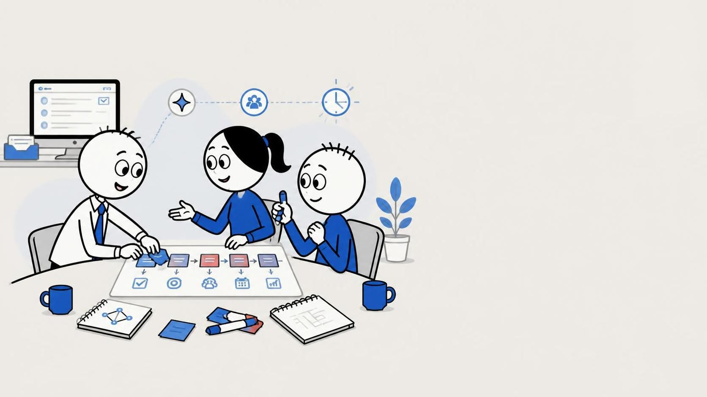
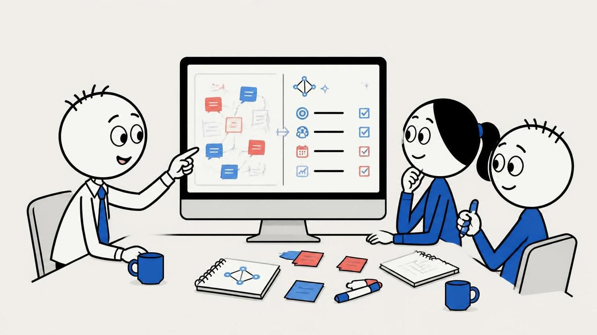
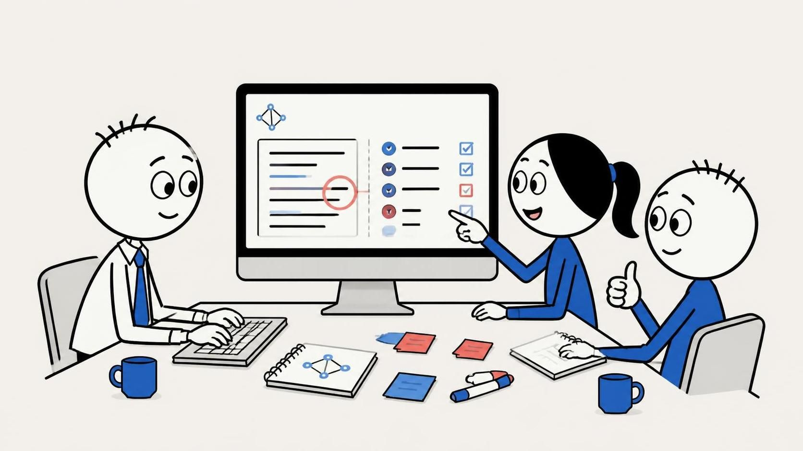
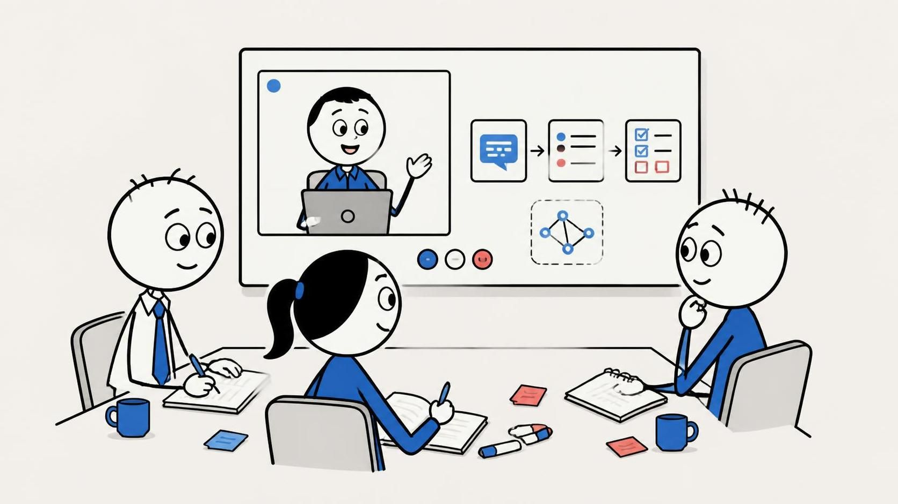

Formation IA pour les équipes agiles
L’IA au service de votre agilité.
Apprenez à utiliser l’IA générative pour retrouver le contexte, structurer l’information et consacrer plus de temps aux décisions qui comptent.

Découvrez Déclic IA en 60 secondes
Vidéo sous-titrée en français.
La vidéo n’est pas disponible pour le moment.
L’agilité devrait libérer, pas paralyser.
- L’information est dispersée entre e-mails, documents, outils et réunions.
- Les décisions ralentissent lorsque l’équipe doit sans cesse reconstituer le contexte.
- La documentation et le backlog finissent par s’éloigner de ce qui se passe réellement.
L’IA comme accélérateur, pas comme pilote automatique
- Méthode
- Contexte
- IA générative
- Vérification
- Décision humaine
Proposer, oui. Décider, non.
L’IA aide à comprendre, structurer, comparer, synthétiser et préparer.
Le professionnel conserve le jugement, la validation et la responsabilité.


Quel sera votre prochain déclic ?

-
01 — Découvrir
Déclic IA — Les fondamentaux
Comprendre l’IA générative, apprendre à contextualiser ses demandes, utiliser le grounding, structurer ses prompts, vérifier les résultats et identifier les tâches où l’IA peut réellement augmenter le travail humain.
-
02 — Augmenter
Déclic IA — Product Owner augmenté
Utiliser l’IA pour explorer un problème, qualifier un besoin, challenger des hypothèses, préparer le backlog, soutenir la discovery et améliorer la communication avec les parties prenantes, sans déléguer son jugement.
-
03 — Transformer
Déclic IA — De l’usage à la valeur
Passer du « faisons de l’IA » à une approche pilotée par les outcomes : valeur métier, faisabilité, risques, parties prenantes, expérimentation et passage du POC à l’adoption.
-
04 — Créer
Déclic IA — De l’idée au produit
Apprendre une méthodologie reproductible pour concevoir et livrer un produit numérique avec l’IA sans commencer par choisir les outils.
- Cadrer
- Concevoir
- Contextualiser
- Générer
- Critiquer et itérer
- Livrer
Les outils utilisés pendant les ateliers peuvent évoluer. La formation porte sur une méthode transférable entre assistants IA, générateurs de contenus et environnements de développement.
Prolongez votre parcours
-
Professional Scrum Product Owner™ — AI Essentials
Organisme : Scrum.org
Approfondir l’usage responsable de l’IA dans le Product Ownership, la discovery, l’expérimentation et la prise de décision.
Certification officielle tierce — Déclic IA n’est pas affilié à Scrum.org.
-
SAFe Agilist
Organisme : Scaled Agile
Approfondir l’agilité à l’échelle et l’évolution des pratiques de leadership dans un environnement augmenté par l’IA.
Certification officielle tierce — Déclic IA n’est pas affilié à Scaled Agile.
-
AI-Native Value Architect
Organisme : Scaled Agile
Approfondir la transformation d’opportunités IA en valeur durable, de l’identification du besoin au passage à l’échelle.
Certification officielle tierce — Déclic IA n’est pas affilié à Scaled Agile.
Ce qu’on veut changer dès le lendemain
- Moins de temps passé à retrouver le contexte.
- Des questions mieux préparées.
- Des décisions mieux documentées.
- Des productions plus rapides sans sacrifier la vérification.
- Davantage de temps consacré à la valeur et à la collaboration.
Prêt pour votre prochain déclic ?
Découvrez comment intégrer l’IA dans votre quotidien sans perdre ce qui compte le plus : votre expertise.